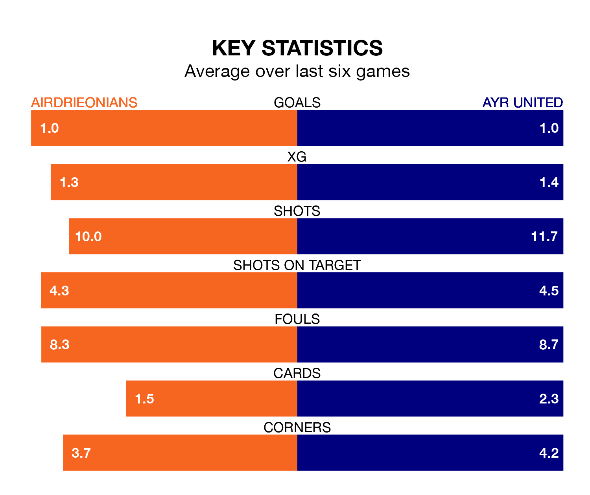

Airdrieonians face Ayr United on Saturday seeking to protect their long unbeaten run in the Championship.
Airdrieonians are unbeaten in five, with three wins and two draws, ahead of the 3pm kick-off.
They face an Ayr team who have won two and drawn one over the same number of games.
In Joshua Rae, Airdrieonians can rely on one of the league's safest pair of hands. He has kept six clean sheets in his 20 appearances this season, and only one other 'keeper – Dundee United's Jack Walton – has been able to prevent the opposition scoring on more occasions in the Championship.
In Ayr's net, Charlie Albinson has four clean sheets in 17 games. He has conceded a goal every 59 minutes, 50% more often than the 90 minutes between goals for Rae.
In the last 10 years, Airdrieonians and Ayr have played each other on 16 occasions. Airdrieonians won seven of them, Ayr eight, and they drew once.
On average, Airdrieonians scored 1.5 goals and the Honest Men 1.3 in those matches.
Their last meeting was on December 16, when Ayr won 1-0 at home.
With 20 goals in 21 games so far this season, the home side are the league's lowest scorers with 1.0 goals per game. But they are conceding fewer than average too, letting in 24 goals at a rate of 1.1 per game.
United are also below average scorers, with 1.3 goals per game, compared to a league average of 1.4. They have conceded 1.8 goals per game.
Airdrieonians are fifth in the table after 21 games, of which they have won eight and drawn four, earning 28 points.
The Honest Men are one place behind Airdrieonians in sixth, with seven wins and five draws putting them on 26 points.
Airdrieonians's last match was on January 27, a 1-1 draw against Partick Thistle, with Craig Watson getting the goal for Airdrieonians.
Ayr lost 2-1 against Dundee United last time out, on February 3, with Jamie Murphy on the scoresheet.
Updated: 11:47 (UTC), 05/02/24